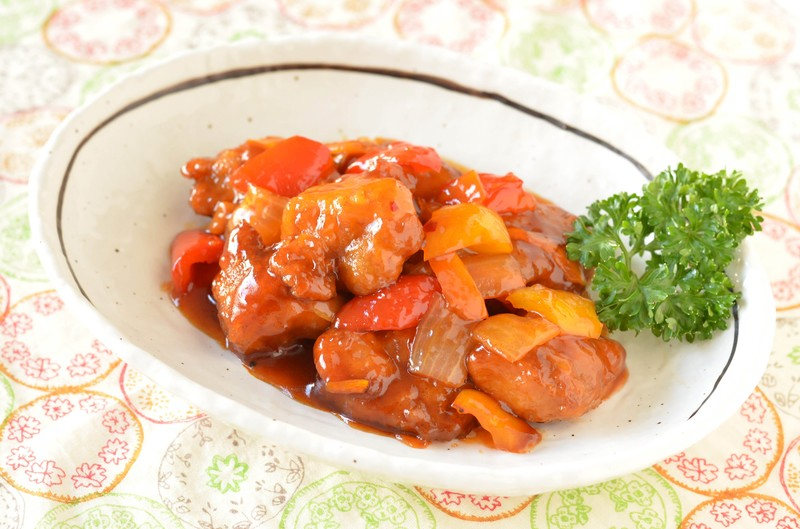

酢豚

材料 2人分
- 豚ロース肉(とんかつ用)
- 200g
- 玉ねぎ
- 1/2個
- 赤パプリカ
- 1/2個
- 黄パプリカ
- 1/2個
- 塩胡椒
- 適量
- 片栗粉
- 大さじ1
- 水
- 大さじ3
- お酢
- 大さじ1と1/2
- ケチャップ
- 大さじ1と1/2
- 砂糖
- 大さじ1と1/2
- 醤油
- 大さじ1
- 片栗粉
- 大さじ1/2
- 塩
- ひとつまみ
作り方
1
玉ねぎは繊維を断つように半分に切り、繊維にそって2㎝幅に切ります。
赤、黄パプリカはヘタと種を取り除き、一口大の乱切りにします。
玉ねぎは切った後にばらばらにほぐしておきます。
2
油を170～180℃に熱し、豚肉を2分ほど揚げて火を通して取り出します。
続けて、野菜を入れて1分ほど素揚げして火を通して取り出します。
3
フライパンにBをすべて合わせ、火にかける前にしっかり溶かし混ぜておきます。
4
フライパンを弱めの中火にかけます。
へらなどで全体を混ぜながら火にかけ、とろみがついてきたら火を弱め、3の豚肉と野菜を戻し入れ、全体を炒め合わせ完成です。